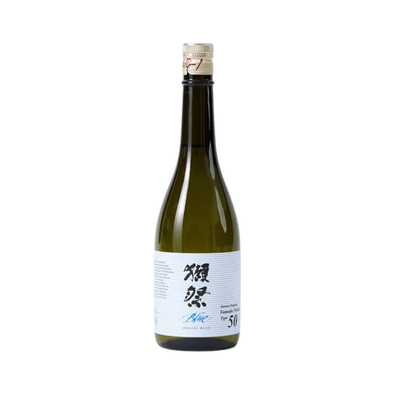
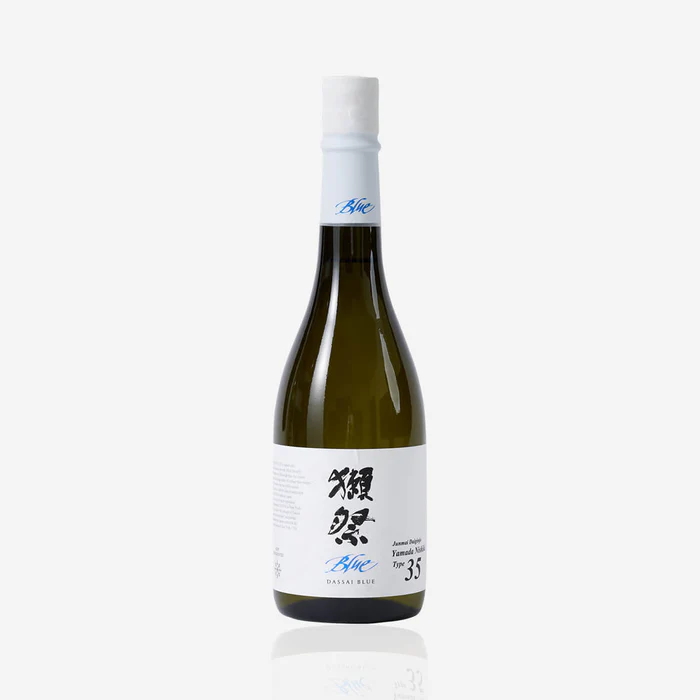
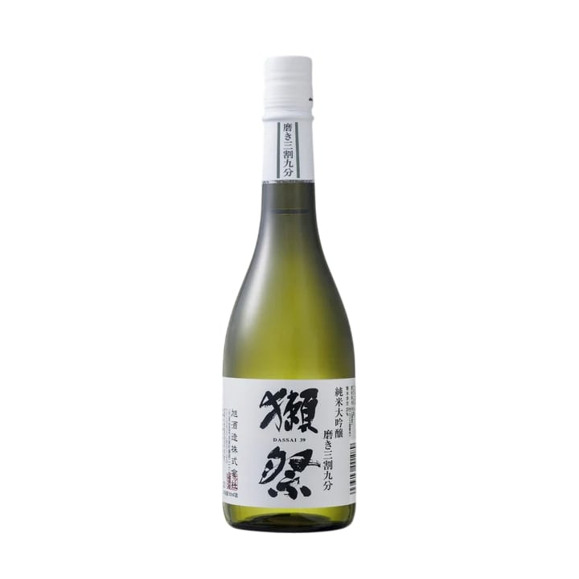
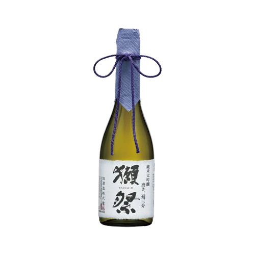

Sake & Beverage Selection
Sake Brewed in USA

Dassai Blue 50 Junmai Daiginjo
A clean and modern sake brewed at Dassai’s Hudson Valley brewery. Soft melon and pineapple notes, gentle sweetness, and a smooth refreshing finish.
OriginHyde Park, New York
Rice Polishing Ratio50%
Alcohol Content14%
Serving TempChilled
$70 (720ml) | $35 (375ml)

Dassai Blue 35 Junmai Daiginjo
Refined to an impressive 35% polish. Elegant melon and floral aromas with a silky, smooth finish. Beautiful balance of sweetness and purity.
OriginHyde Park, New York
Rice Polishing Ratio35%
Alcohol Content14%
Serving TempChilled
$48 (375ml)
Sake From Japan

Dassai 45 Junmai Daiginjo
Chewy, full-bodied sake with honeydew aromas and muscat sweetness balanced by crisp dryness.
OriginYamaguchi, Japan
Rice Polishing Ratio45%
SMV+3
Acidity1.4
Serving TempChilled
$70 (720ml) | $35 (300ml)

Dassai 39 Junmai Daiginjo
Soft, elegant aromas of melon, peach, and white flowers. Smooth silky texture, clean finish.
OriginYamaguchi, Japan
Rice Polishing Ratio39%
Alcohol Content16%
SMV+3
Acidity1.3
Serving TempChilled
$105 (720ml) | $48 (300ml)

Dassai 23 Junmai Daiginjo (300ml)
Ultra-premium sake polished to 23%. Silky, elegant, floral, clean lingering finish.
OriginYamaguchi, Japan
Rice Polishing Ratio23%
Alcohol Content16%
SMV+4
Acidity1.3
Serving TempChilled
$75 (300ml)

Kubota Junmai Daiginjo
Refined sake with delicate pear and apple notes. Light, clean, refreshing.
OriginNiigata, Japan
Rice Polishing Ratio50%